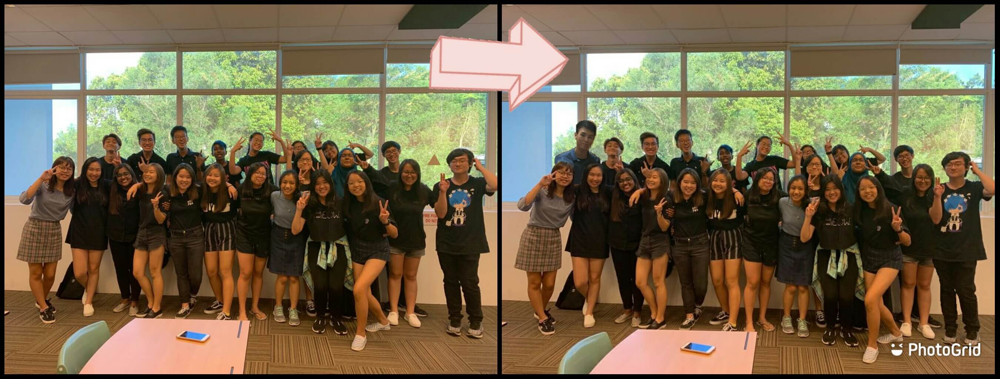
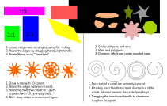
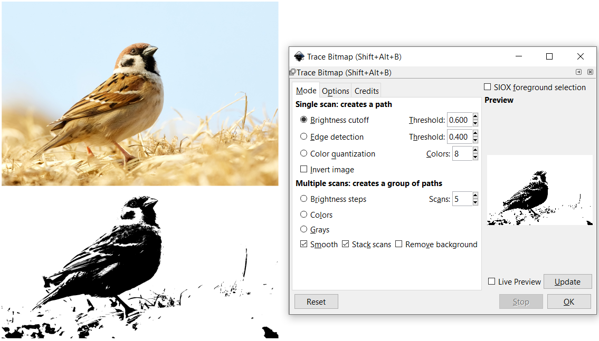
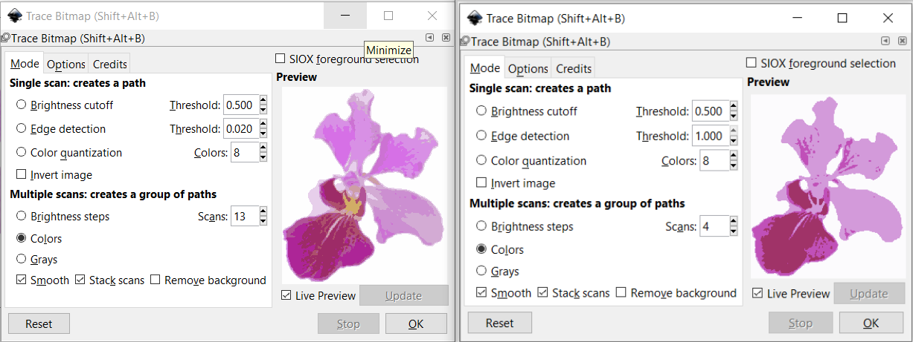
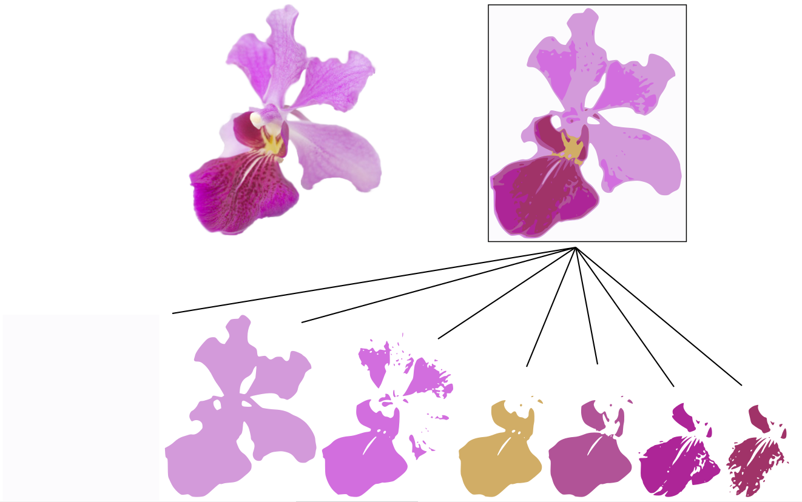
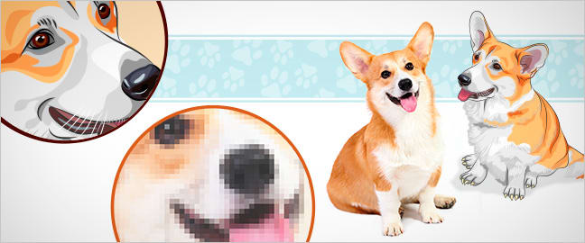
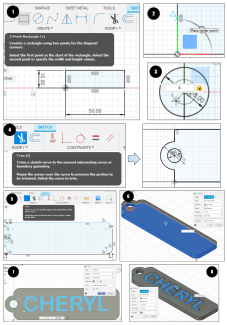
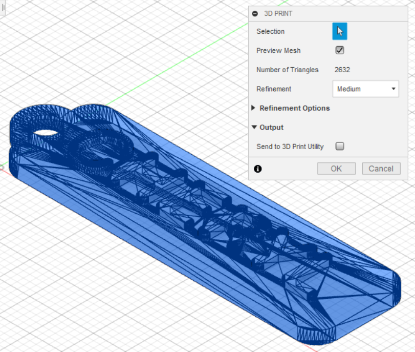
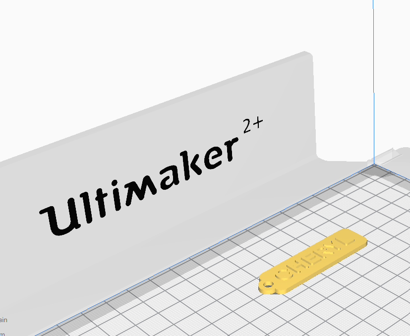

2D raster
Raster images (also called bitmaps), are comprised of individual pixels of color. When viewed as a whole, the colored pixels make up a vivid and detailed painting. Raster images are capable of rendering complex, multi-coloured visuals, including soft color gradients. They are ideal for photo editing and creating digital paintings in programs such as Photoshop and GIMP , and they can be compressed for storage and web optimized images.
The quality of rastor images is defined by the resolution, expressed in pixels-per-inch (ppi), and the dimensions (pixel × pixel). The greater the ppi and dimensional measurements, the higher the quality. If I were to enlarge a rastor image, it will become more blurry as each pixel gets larger too. Quality of image is lost as we scale up rastor images. However, we can scale down rastor images to occupy less storage, such as web images.
Use of 2D rastor software
For simple image editing, I like to use the software installed in my computer, i.e. Microsoft Paint and Paint 3D. The purpose is usually to crop faces or objects, integrating them into a bigger picture, and touching up using the brushes to make them more natural. Here is an example from last year: (Presenting to you, my DBT class!)

GIMP is introduced to me in DFAB. It is also an image editor, but with a plethora of features such as layers, blur background, lock position… and many more! I get to make use of the layers to shift my elements around anytime, unlike in Microsoft Paint when the object is fixed once I click elsewhere. This is how I make a dog appear to be moving from behind a plunge board using GIMP:

2D vector - Inkscape
Vector images are made up of paths, each with a mathematical formula (vector) that tells the path how it is shaped and what color it is bordered with or filled by. Since each image is defined by algorithms, quality of a vector image is retained regardless of how it is scaled. This means that the lines and edges will always be sharp/clear when we zoom in or out.
Vector images are comprised of shapes, and each shape has its own color; hence vectors cannot achieve the color gradients, shadows, and shading that raster images can. Vector drawing is best used for designs with shapes filled with solid colours, making it suitable for logos, illustrations, fancy text and engraving.
Use of 2D vector software
I have drew up some simple shapes and played around with the functions in Inkscape. Saving this image as .svg file and embedding in this web as an image element allows people to enlarge the webpage without losing quality of the shapes & images.

I also learned Bitmap Tracing, which converts a bitmap image into a path. Select Path > Trace Bitmap, or simply press 'Shift + Alt + B'. Tracing does not duplicate the image, however it serves as an aid in drawings. Some applications would be raster engraving (See Computer Controlled Cutting), filling different colours and screen printing.
- Note
- Brightness cutoff: The higher the threshold setting, the fewer the number pixels that will be considered to be “white”, and the intermediate image with become darker. It creates a silhouette-like path that follows the shape of your image.
- Edge detection: The threshold setting determines whether a pixel close to the contrast edge are going to be considered black or white. This is useful for drawing contour lines from a colour gradient.
- Colour quantization: Adjusting the number of colours sets an even or odd index between different colours. Lines will be plotted where colours change, even at equal brightness and contrast.
- Multiple scans: Create a group of paths that makes up a more detailed vector output.
The picture below shows how I traced out a sparrow (image taken from Unsplash).

The picture below shows the difference when I adjust the number of scans in Multiple Scans, as well as the result - multiple layers of colours.

Rastor vs Vector: What's the difference?
The image and table below is taken from https://www.psprint.com/resources/difference-between-raster-vector/
| Rastor | Vector |
|---|---|
| Comprised of pixels, arranged to form an image | Comprised of paths, dictated by mathematical formulas |
| Constrained by resolution and dimensions | Infinitely scalable |
| Capable of rich, complex color blends | Difficult to blend colors without rasterizing |
| Large file sizes (but can be compressed) | Small file sizes |
| File types include .jpg, .gif, .png, .tif, .bmp, .psd; plus .eps and .pdf when created by raster programs | File types include .ai, .cdr, .svg; plus .eps and .pdf when created by vector programs |
| Raster software includes Photoshop and GIMP | Vector software includes Illustrator, CorelDraw, and InkScape |
| Perfect for “painting” | Perfect for “drawing” |
| Capable of detailed editing | Less detailed, but offers precise paths |

3D - Fusion 360
CAD or CADD (Computer Aided Design & Drafting) are a set of vector tools that allow you to create your design, simulate and analyse the results without actually building/fabricating the object. Once tested, you can then send the digital data for computer cutting or 3D printing. Fusion 360 is an Integrated CAD, CAM, and CAE software. You can consolidate your product development process. Unify design, engineering, electronics, and manufacturing into a single platform.
To get started, I designed a personalised keychain using Fusion 360. The skills attained are Creating Sketches and Extrusion.
- Create a new sketch and select the XY-plane as the sketch plane. Under sketch, select Rectangle (2-Point) and draw a 50mm x 15mm keychain body.
- Select a Circle (Centre Diameter) and place the starting point at midpoint of the left side. The midpoint is indicated by a blue triangle + X when the mouse hover along the line.
- Draw 2 concentric circles, diameters of 8mm and 4mm at the midpoint.
- Select Trim and remove the unwanted line segments from the sketch.
- Select Fillet under Modify and click on a corner of rectangle. Set fillet radius as 3mm and click OK. Repeat for the other 3 corners.
- Click 'Finish Sketch' and select Extrusion under SOLID. Drag the arrow upwards and key in 2mm.
- Create a new sketch using the top face of keychain as sketch plane. Select Text and click on the sketch plane. I typed in my name and set the font preference, then drag the starting point to position the name. Click OK.
- Finish sketch and Extrude the text by 1mm. That's it!
To send this component to 3D print, I will save this file as STL (Tools > Make > 3D Print), then I open it using Ultimaker Cura.
 More 3D designs: EggHolder_Fusion360 (Loft), ChessPawn_Fusion360 (Revolving), Ghost_Fusion360 (Sculpting)
Assignment
First I am going to use GIMP to create the image I want for my project. Then I will use Inkscape to trace my image into a path. Finally I will use Fusion 360 to design a box for the project.
{kind=link}
{kind=link}